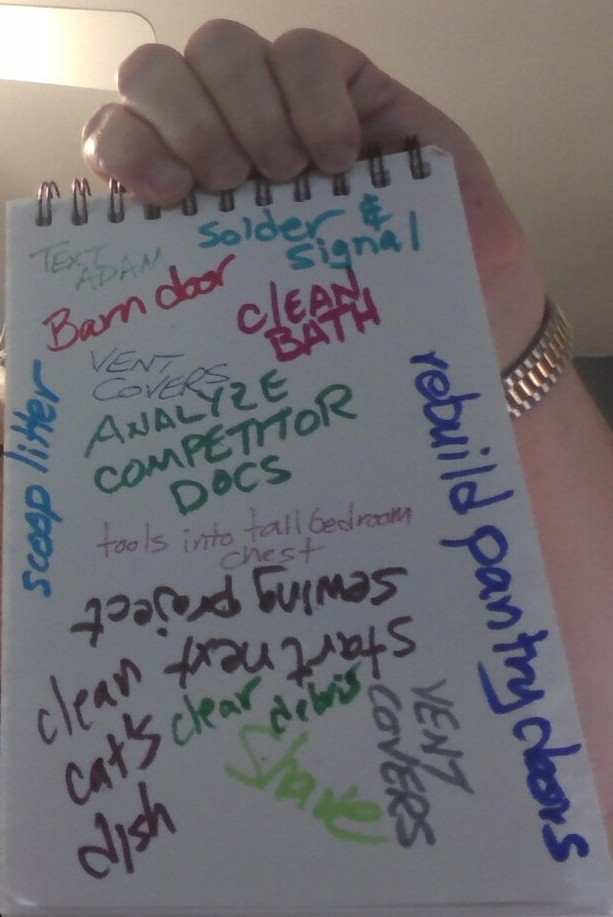
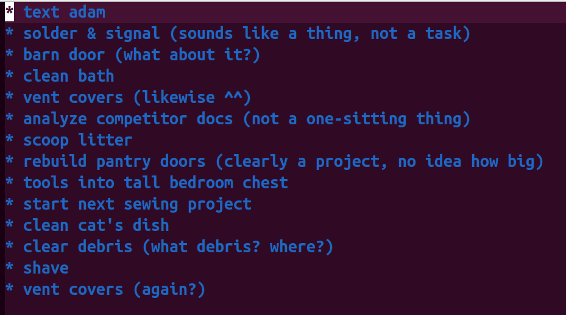

A gentle journey through org-mode for dreamers and doers.
It starts with a single thought -- or perhaps twelve -- half-formed, like a soap bubble at sunrise:
You don't worry about structure yet. This is the seed plot; let it grow for a few minutes or a week or whatever time you have to leave it be.
Once it's more fully-formed, you can convert it to an Emacs text file:
text adam
solder & signal
barn door
clean bath
vent covers
analyze competitor docs
scoop litter
rebuild pantry doors
tools into tall bedroom chest
start next sewing project
clean cat's dish
clear debris
shave
vent covers (again?)
There's your list, which has now become a little more real. It's not necessarily a to-do list yet; if you read it, you'll see it's kinda just random things, mostly orbiting around tasks, but still sort of uneven. For example, we have:
text adam
solder & signal (sounds like a thing, not a task)
barn door (what about it?)
clean bath
vent covers (likewise ^^)
analyze competitor docs (not a one-sitting thing)
scoop litter
rebuild pantry doors (clearly a project, no idea how big)
tools into tall bedroom chest
start next sewing project
clean cat's dish
clear debris (what debris? where?)
shave
vent covers (again?)
Step 1, then is to sort of clarify these and give them some context. To do that, we need to get them in org-mode:
M-x org-mode
Nothing changed yet:
text adam
solder & signal (sounds like a thing, not a task)
barn door (what about it?)
clean bath
vent covers (likewise ^^)
analyze competitor docs (not a one-sitting thing)
scoop litter
rebuild pantry doors (clearly a project, no idea how big)
tools into tall bedroom chest
start next sewing project
clean cat's dish
clear debris (what debris? where?)
shave
vent covers (again?)
But wait, we're about to do a little magic. Let's put an asterisk (*) and a space in front of every list item, like this:
Now we have some tools to work with; first, let's organize these ideas a little. Using M-up-arrow and M-down-arrow (usually, that's the alt key), you can move these up and down. Let's just sort these simply, without trying to define too many categories, by putting things that seem together next to each other:
Doesn't help much, but we do begin to see some patterns. The point is that it was really easy to move items up and down without cutting and pasting, forgetting what you just cut and putting it back in the wrong place so you can remember it, and so on.